Image 1 of 1: ‘An infographic showing some of the relationships between AI, ML, and DL’
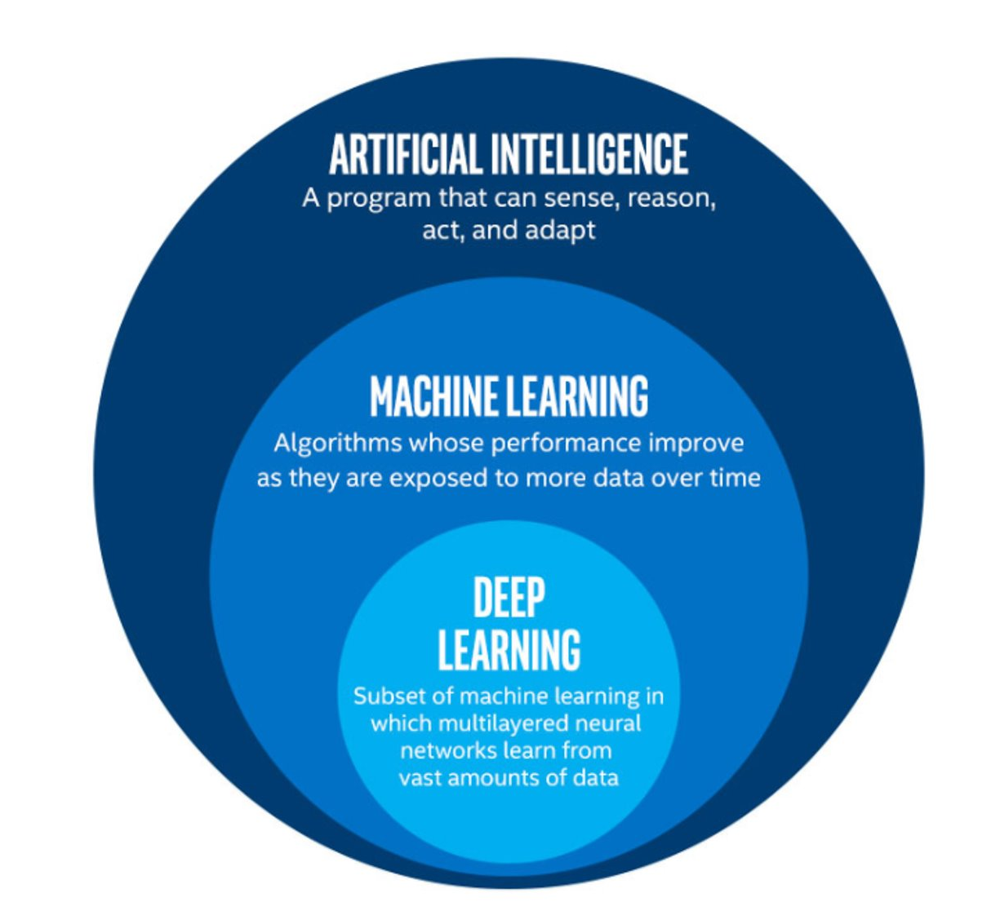
The image above is by Tukijaaliwa, CC BY-SA 4.0, via Wikimedia Commons,
original source
Figure 2
Image 1 of 1: ‘A feature matrix, which contains N features and N samples (which is referred to as 'X'), and a target array, which contains N labels or values (referred to as 'y').’
Image 1 of 1: ‘A pair of graphs comparing a linear and a polynomial regression. The linear regression is a straight line that fits through the data points, while the polynomial regression is a curved line that fits more closely to the data points.’
Example of linear and polynomial
regressions
Figure 2
Image 1 of 1: ‘A scatter plot of the first Anscombe dataset.’
Inspection of our dataset
Figure 3
Image 1 of 1: ‘A plot of the first Anscombe dataset with a linear regression line fitted to the data points.’
Linear regression of dataset I
Figure 4
Image 1 of 1: ‘A plot of the second Anscombe dataset with a linear regression line fitted to the data points. The points are not well aligned with the linear regression line.’
Linear regression of dataset II
Figure 5
Image 1 of 1: ‘A plot of the third Anscombe dataset with a linear regression line fitted to the data points. The points are not well aligned with the linear regression line.’
Linear regression of dataset III
Figure 6
Image 1 of 1: ‘A plot of the fourth Anscombe dataset with a linear regression line fitted to the data points. The points are not well aligned with the linear regression line.’
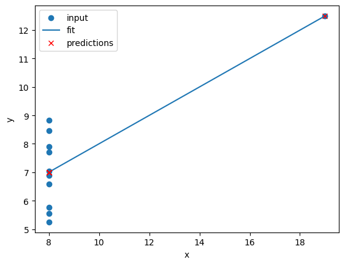
Linear regression of dataset IV
Figure 7
Image 1 of 1: ‘The second Anscombe dataset with a linear regression line and a polynomial regression line fitted to the data points. The polynomial regression fits the data points much more closely than the linear regression.’
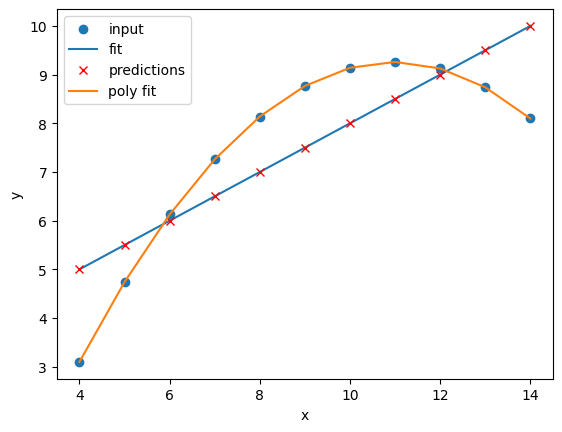
Comparison of the regressions of our
dataset
Figure 8
Image 1 of 4: ‘A plot of the first Anscombe dataset with a polynomial regression line fitted to the data points.’
Image 2 of 4: ‘A plot of the second Anscombe dataset with a polynomial regression line fitted to the data points.’
Image 3 of 4: ‘A plot of the third Anscombe dataset with a polynomial regression line fitted to the data points.’
Image 4 of 4: ‘A plot of the fourth Anscombe dataset with a polynomial regression line fitted to the data points.’
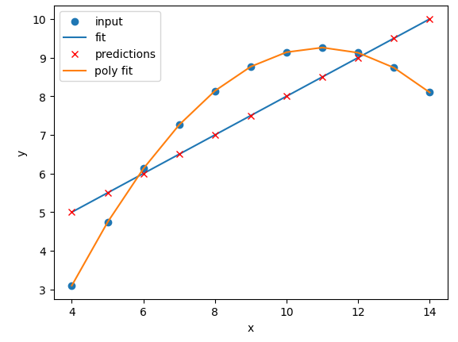
Figure 9
Image 1 of 4: ‘A plot of the first Anscombe dataset with polynomial regression lines fitted to the data points for polynomial degrees N=1 to N=10. The polynomial lines become more complex as N increases.’
Image 2 of 4: ‘A plot of the second Anscombe dataset with polynomial regression lines fitted to the data points for polynomial degrees N=1 to N=10. All of the polynomial lines are very similar and overlap the data points.’
Image 3 of 4: ‘A plot of the third Anscombe dataset with polynomial regression lines fitted to the data points for polynomial degrees N=1 to N=10.’
Image 4 of 4: ‘A plot of the fourth Anscombe dataset with polynomial regression lines fitted to the data points for polynomial degrees N=1 to N=10. All of the polynomial lines are similar and overlap.’
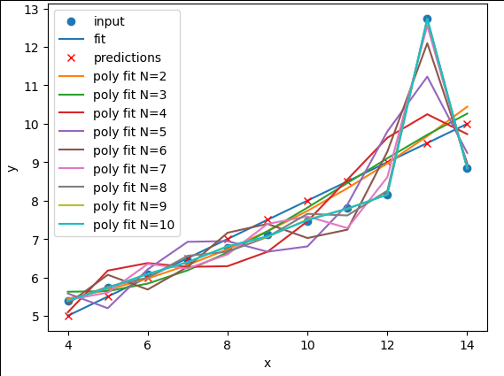
Figure 10
Image 1 of 1: ‘A plot of a subset of the penguin dataset with a linear regression line fitted to the data points. The points are well aligned with the linear regression line.’
Comparison of the regressions of our
dataset
Figure 11
Image 1 of 1: ‘A plot of the same regression, this time with the entire dataset. It is now clear that the lonear regression fits two classes, but is a poor predictor of the third class of penguins.’
Image 1 of 1: ‘A cartoon image of three penguins standing on a snowy island. The penguins are labelled as Chinstrap, Gentoo and Adélie.’
Artwork by @allison_horst
Figure 2
Image 1 of 1: ‘A drawn image of a penguin's head, showing where bill length and bill depth are measured.’
The physical attributes measured are flipper length, beak length,
beak width, body mass, and sex.
Figure 3
Image 1 of 1: ‘A scatter plot of the penguin dataset, showing bill length on the x-axis and bill depth on the y-axis. The points are coloured by species. There are three clusters of points, one for each species, with some overlap between the species.’
Visualising the penguins dataset
Figure 4
Image 1 of 1: ‘A pairplot of the penguin dataset, showing scatter plots of each pair of features. The points are coloured by species. There are three clusters of points, one for each species, with some overlap between the species.’
Visualising the penguins dataset
Figure 5
Image 1 of 1: ‘A decision tree example showing how one might classify four species of animals based on their features. The tree starts with 'Has feathers?' and branches into 'Can Fly?' and 'Has fur?'. The outcomes are Hawk, Penguin, Bear, and Dolphin’
Decision tree for classifying penguins
Figure 6
Image 1 of 1: ‘An auomatically generated decision tree based on the model we just trained, showing how the model makes decisions based on the penguin features. The tree has 2 levels, with the first level splitting on flipper length, the second level splitting on bill length and bill depth.’
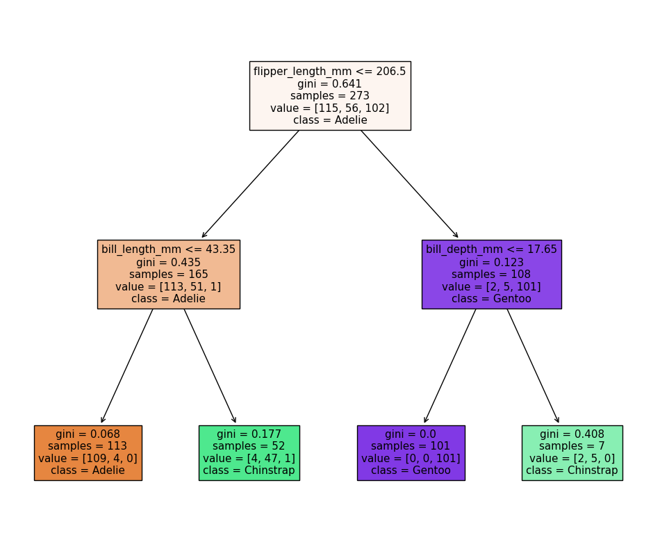
Decision tree for classifying penguins
Figure 7
Image 1 of 1: ‘A scatter plot of the penguin daaset, showing bill length on the x-axis and body mass on the y-axis. The points are coloured by species. The decision tree is shown as colored regions, with the boundaries between the regions being orthogonal lines. The regions are generally aligned with the species clusters, but there are several misclassifications.’
Classification space for our decision tree
Figure 8
Image 1 of 1: ‘A line plot showing the accuracy of decision trees with various max_depth hyper-parameters. The x-axis shows the max_depth, and the y-axis shows the accuracy. The accuracy is highest at max_depth=2.’
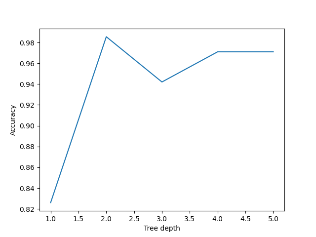
Performance of decision trees of various
depths
Figure 9
Image 1 of 1: ‘An automatically generated decision tree based on the model we just trained, showing how the model makes decisions based on the penguin features. The tree has 4 levels, and is difficult to read.’
Simplified decision tree
Figure 10
Image 1 of 1: ‘A scatter plot of the penguin daaset, showing bill length on the x-axis and body mass on the y-axis. The points are coloured by species. The decision tree is shown as colored regions, with the boundaries between the regions being orthogonal lines. The regions are generally aligned with the species clusters, but there are many small regions that only select a single point.’
Classification space of the simplified decision
tree
Figure 11
Image 1 of 1: ‘A scatter plot of the penguin daaset, showing bill length on the x-axis and bill depth on the y-axis. The points are coloured by species. The SVM is shown as colored regions, with the boundaries between the regions being curved lines. The regions are generally aligned with the species clusters, but there are still several misclassifications.’
Image 1 of 1: ‘A diagram showing how stacking works. It shows three different models being trained on the same data, and then their outputs being combined in a final model to make a prediction.’
Stacking
Figure 2
Image 1 of 1: ‘A diagram showing how bagging works. It shows the same model being trained on different subsets of the data, and then their outputs being averaged to make a prediction.’
Stacking
Figure 3
Image 1 of 1: ‘A diagram showing how boosting works. It shows the same model being trained on the same data, but with each iteration focusing on the samples that were poorly predicted by the previous iteration.’
Stacking
Figure 4
Image 1 of 1: ‘A diagram showing how a random forest works. It shows multiple decision trees being trained on different subsets of the data, and then their outputs being combined to make a prediction.’
Random Forests
Figure 5
Image 1 of 1: ‘A figure showing the first 5 trees in a random forest model. Each tree is a decision tree with different splits based on the penguin features, and each tree has a different structure and depth.’
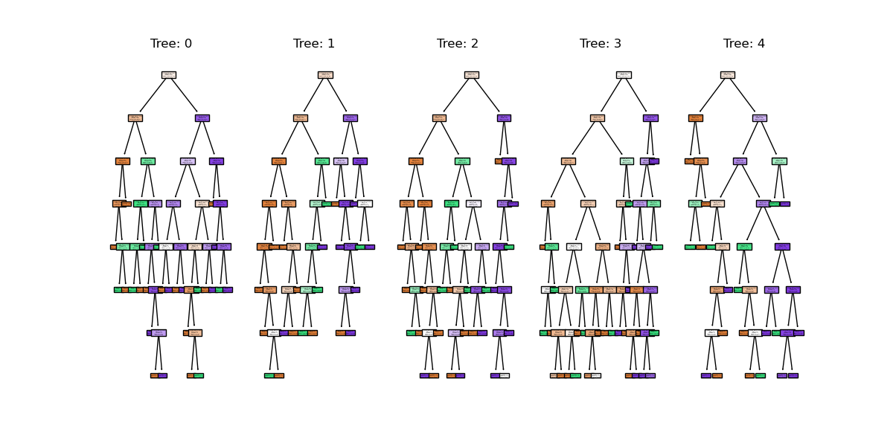
random forest trees
Figure 6
Image 1 of 1: ‘A scatter plot of the penguin dataset, showing body mass on the x-axis and bill length on the y-axis. The points are coloured by species. The random forest classifier is shown as colored regions, with the boundaries between the regions being orthogonal lines. The regions are generally aligned with the species clusters, but there are still several misclassifications and a complicated decision space.’
random forest clf space
Figure 7
Image 1 of 1: ‘A plot showing the predictions of different regression models on the same dataset. Each model's predictions are represented by different colored markers, and the voting regressor's predictions are shown as larger red crosses.’
Image 1 of 1: ‘A scatter plot of randomly generated clusters. The points are coloured by their cluster id, with four distinct clusters visible.’
Plot of the random clusters
Figure 2
Image 1 of 1: ‘A scatter plot of the random clusters, with the points coloured by their cluster id. The centres of each cluster are marked with a red X.’
Plot of the fitted random clusters
Figure 3
Image 1 of 1: ‘A scatter plot showing the failure of k-means clustering on non-linear cluster boundaries. The points are coloured by their cluster id, with two distinct circular clusters visible. Each circle of points is half in one cluster and half in the other.’
An example of kmeans failing on non-linear
cluster boundaries
Figure 4
Image 1 of 1: ‘A scatter plot showing two rings of points.’
Kmeans attempting to classify overlapping
clusters
Figure 5
Image 1 of 1: ‘A scatter plot showing the results of spectral clustering on two concentric circles. The points are coloured by their cluster id, with one circle in red and the other in black. Unlike k-means, the clusters are not split by a straight line.’
Spectral clustering on two concentric
circles
Figure 6
Image 1 of 1: ‘A 3D scatter plot showing the results of spectral clustering on two concentric circles. The points are coloured by their cluster id, with one circle in red and the other in black. The circles are separated vertically in the third dimension.’
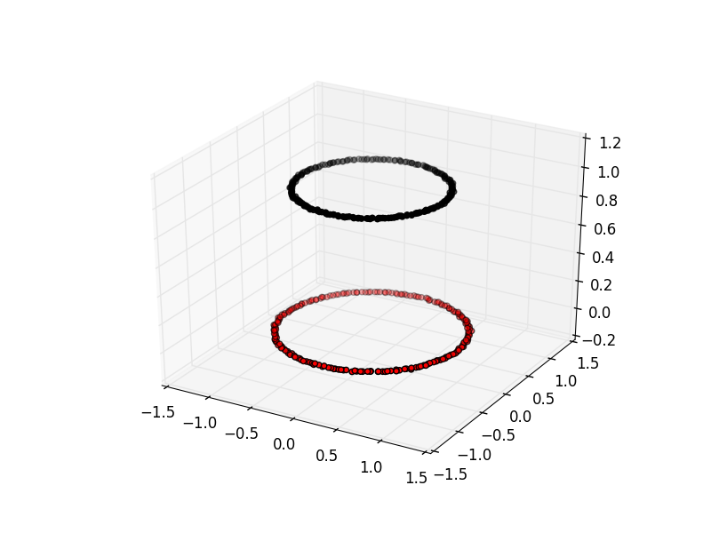
Spectral clustering viewed with an extra
dimension
Figure 7
Image 1 of 1: ‘A scatter plot showing the results of k-means clustering on two concentric circles. The points are coloured by their cluster id, with one circle in yellow and the other in purple. The clusters are split by a straight line.’
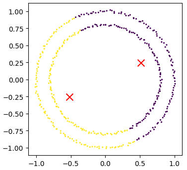
Kmeans attempting to cluster the concentric
circles
Figure 8
Image 1 of 1: ‘A scatter plot showing the results of spectral clustering on two concentric circles. The points are coloured by their cluster id, with one circle in yellow and the other in purple. Unlike k-means, the clusters are not split by a straight line and are correctly identified.’
Image 1 of 1: ‘A grid of images showing examples of handwritten digits from 0 to 9. Each image is a greyscale image of a single digit, with the digits varying in size and style.’
MNIST example illustrating all the classes in
the dataset
Figure 2
Image 1 of 1: ‘A zoomed in greyscale image of a handwritten number '3'.’
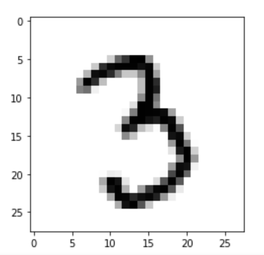
MNIST example of a single image
Figure 3
Image 1 of 1: ‘A pixelated image of a handwritten '0', with red crosses marking the pixels at positions 0_4, 1_4, 2_4, and 3_4.’
SKLearn image with highlighted pixels
Figure 4
Image 1 of 1: ‘A pairplot of the MNIST dataset, showing the relationships between the pixels at positions 0_4, 1_4, 2_4, and 3_4. Each plot is coloured by the digit label, with distinct clusters visible for some digits.’
SKLearn image with highlighted pixels
Figure 5
Image 1 of 1: ‘A scatter plot of the PCA reduced data. The points are not coloured by label, and so the clusters are not clearly visible.’
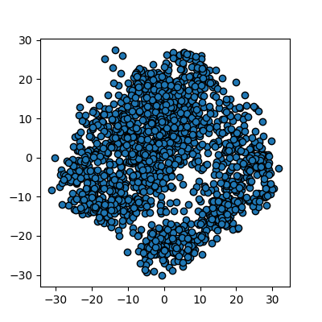
Reduction using PCA
Figure 6
Image 1 of 1: ‘A scatter plot of the PCA reduced data, with the points coloured by their cluster id. The centres of each cluster are marked with a red X.’
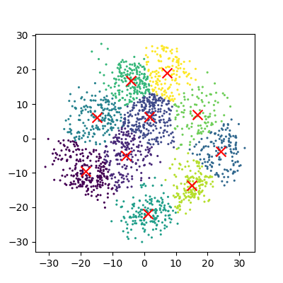
Reduction using PCA
Figure 7
Image 1 of 1: ‘A scatter plot of the PCA reduced data, with the points coloured by their digit label. The clusters are not clearly visible, with some digits overlapping significantly.’
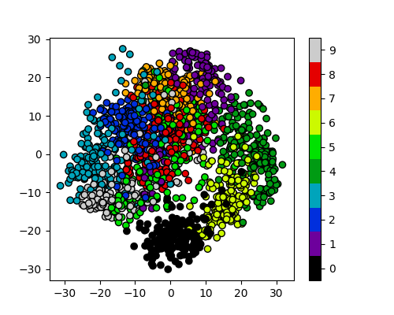
Reduction using PCA
Figure 8
Image 1 of 1: ‘A scatter plot of the t-SNE reduced data. The points are not yet coloured by label, but already several claer clusters are visible.’
Reduction using PCA
Figure 9
Image 1 of 1: ‘A scatter plot of the t-SNE reduced data, with the points coloured by their cluster id. The centres of each cluster are marked with a red X.’
Reduction using PCA
Figure 10
Image 1 of 1: ‘A scatter plot of the t-SNE reduced data, with the points coloured by their digit label. The clusters are clearly visible.’
Reduction using PCA
Figure 11
Image 1 of 1: ‘A 3D scatter plot showing the results of PCA on the MNIST dataset. The points are coloured by their digit label, with distinct clusters visible for some digits.’
Reduction to 3 components using pca
Figure 12
Image 1 of 1: ‘A 3D scatter plot showing the results of t-SNE on the MNIST dataset. The points are coloured by their digit label, with distinct clusters visible for some digits.’
Image 1 of 1: ‘A diagram of a perceptron, showing three inputs, leading to a summation unit, then a thresholding unit, and finally an output.’
A diagram of a perceptron
Figure 2
Image 1 of 1: ‘A diagram of a multi-layer perceptron, showing an input layer with 3 inputs, a hidden layer with 2 neurons, and an output layer with 3 outputs. The connections between the layers are shown.’
 Image from Vasily
Zubarev via their blog with modifications in blue to denote lesson
content.
Image from Vasily
Zubarev via their blog with modifications in blue to denote lesson
content.


 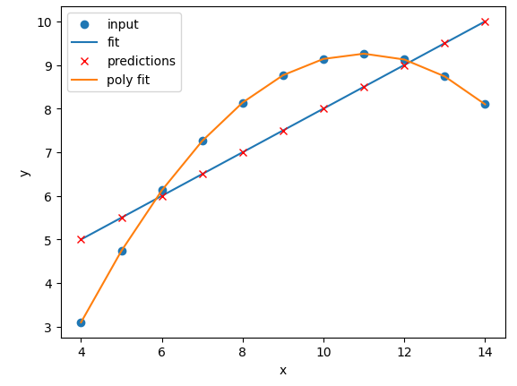
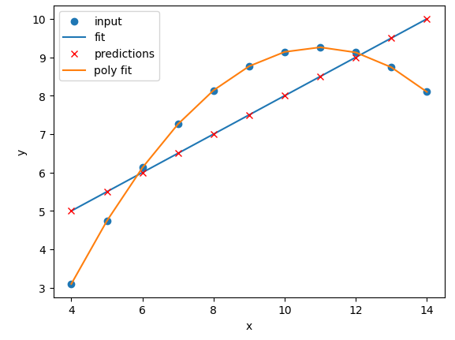


 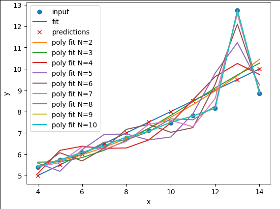
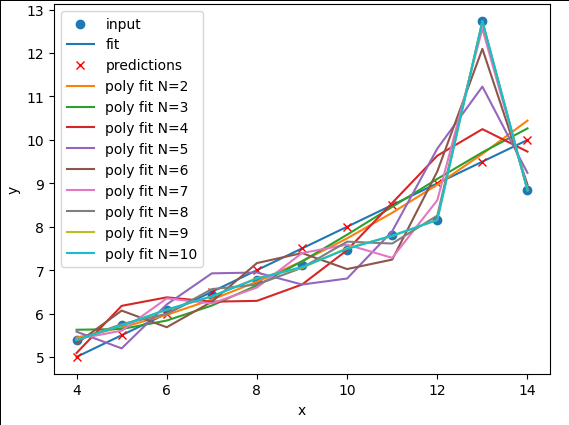